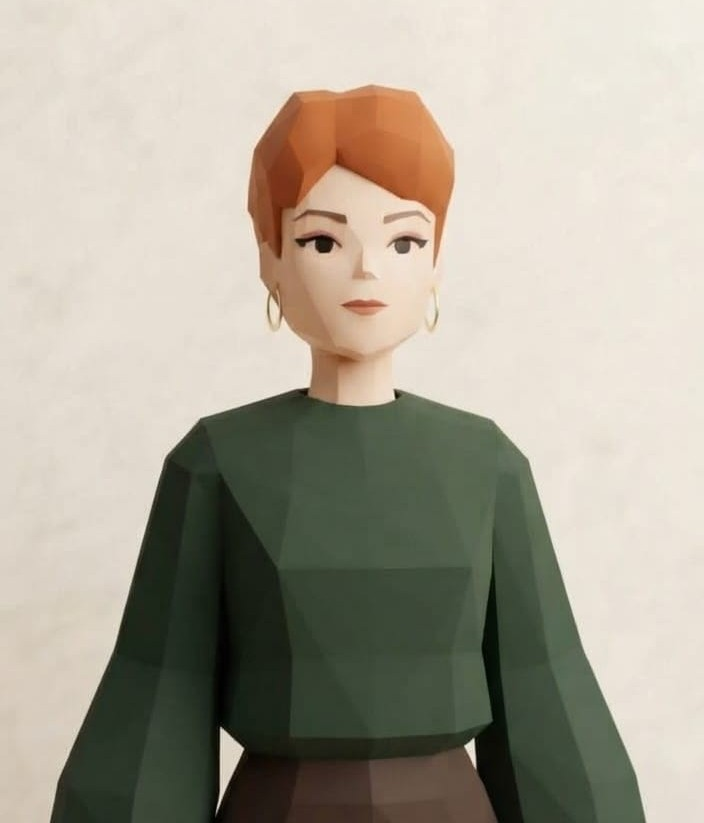

NIGHT AFRAID
La ciudad es tuya de día. Sobrevive de noche.
Historia
Bienvenido a New Haven, la única metrópoli donde el sueño americano se construye de día y se defiende con sangre de noche. Tras un colapso económico devastador, la ciudad sobrevivió gracias a una medida extrema: el Decreto de Seguridad Nocturna. Bajo la luz del sol, eres un ciudadano ejemplar; trabajas, compras el auto de tus sueños y amueblas tu casa ideal bajo la protección absoluta de la policía. Pero cuando el reloj marca las 12:00 AM, la ley desaparece, las sirenas se apagan y las puertas del caos se abren de par en par. Durante seis horas de anarquía legalizada, las calles se convierten en una zona de guerra táctica donde tus vecinos se vuelven tus peores enemigos. ¿Tendrás las agallas para saquear las mansiones más ricas, defender tu propio patrimonio y sobrevivir al terror hasta que el sol vuelva a salir a las 6:00 AM?
Características destacadas
Dualidad Temporal: Alternancia estricta entre una fase diurna de simulador social (6:00 AM – 12:00 AM) y una fase nocturna de supervivencia táctica (12:00 AM – 6:00 AM).
Patrimonio con Valor Real: Todo lo que compras, amueblas y construyes durante el día es exactamente el botín físico que debes defender o saquear durante la noche.
Sistema de Ley Dinámico: Orden legal diurno con intervención policial e ingreso a prisión, contra la anarquía nocturna donde todos los delitos se vuelven legales.
Economía Interactiva: Trabajos en comercios locales para ganar dinero, compra de terrenos, casas modulares, decoración de interiores y concesionarios de vehículos.
Clasificatorio Nocturno: Puntuación en tiempo real a las 6:00 AM que premia al ganador de la noche según el valor del botín hurtado y las bajas conseguidas.
Multijugador Optimizada: Servidores dedicados para 30 jugadores, con inteligencia artificial confinada en el interior de comercios para maximizar el rendimiento PvP.
Personajes
Valerie
Especialista en infiltración y combate cerrado.
Mia
Experta en armamento pesado y explosivos.

Nix
Estratega táctico y conductor de huida.